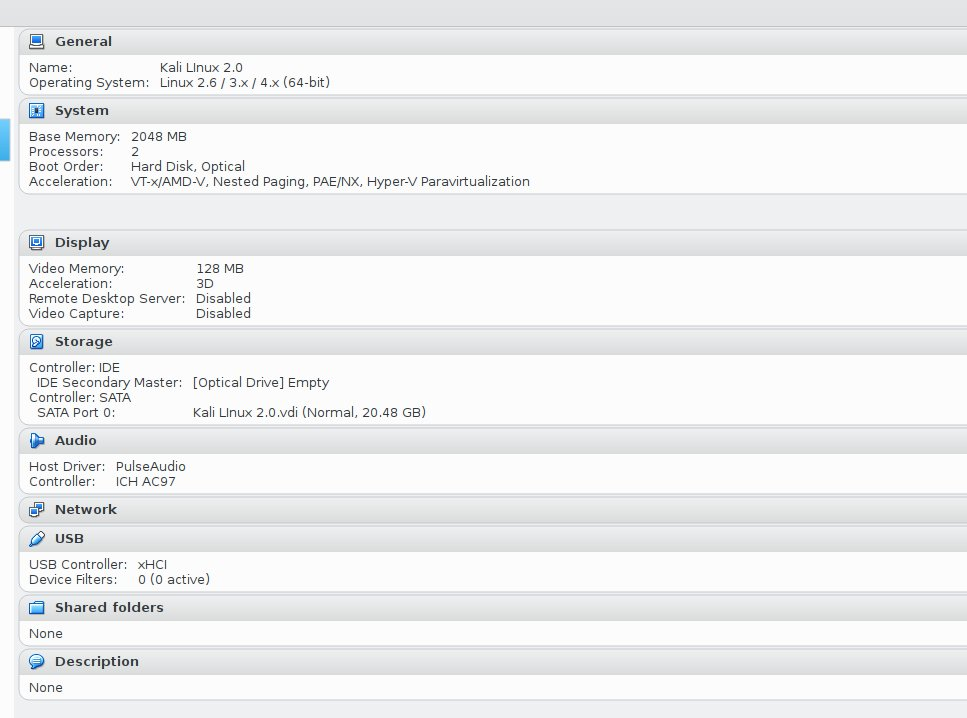
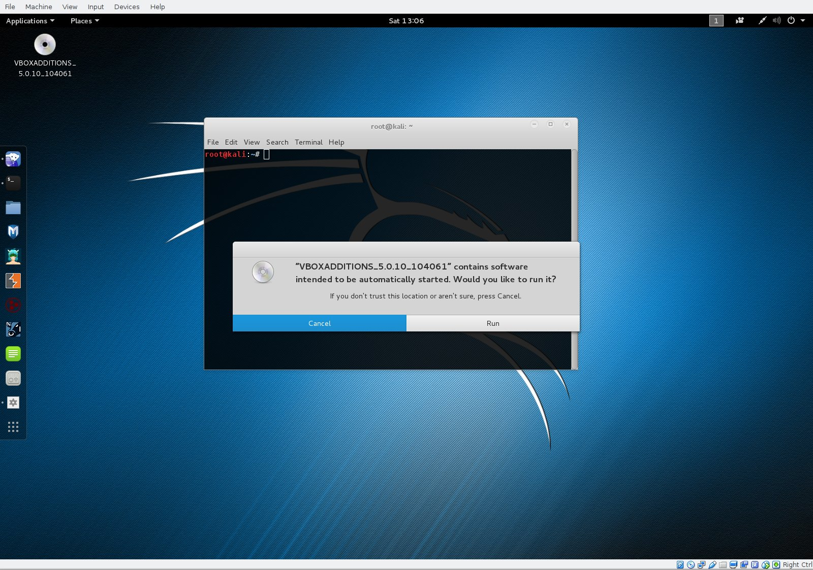
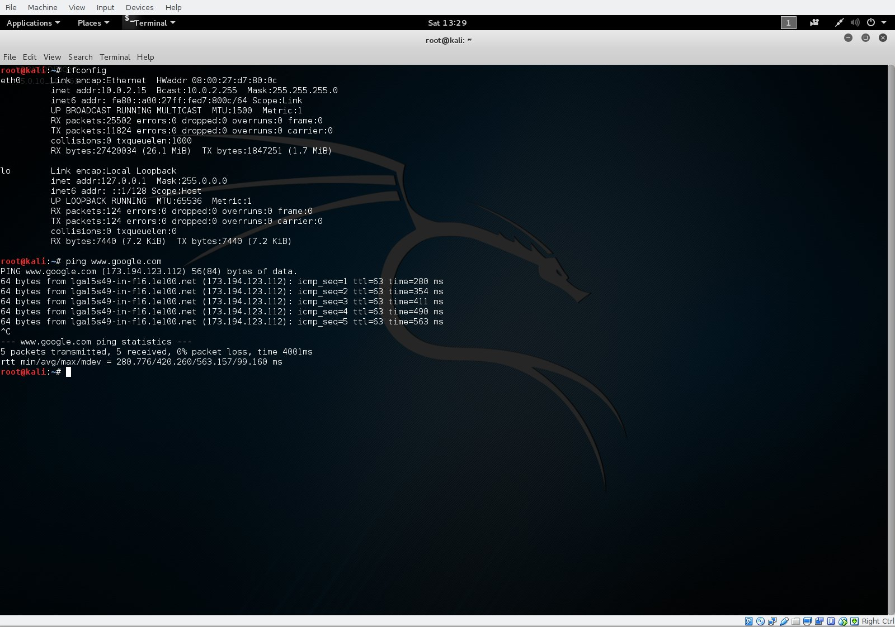

Introduction
Kali Linux is a specially designed build of Debian that is tailor
made for the computer security community. It is preloaded with
tools used by computer security researchers and penetration testers.
Installing the Kali Linux 2.0 Virtual Machine

Download the appropriate ISO image for your machine. This will be run in a Virtual Machine.
Kali Linux 2.0 VirtualBox Setup

Kali Linux was given 2GB of memory, 2 processors and 20GB of hard drive space. It runs snappy and responsive with this setup. You may need more processors or memory if you will be using brute-force password cracker tools (legally of course).
Kali Linux Running in Virtual Machine

After successfully installing Kali Linux onto the virtual hard drive, it is basically ready to run; however, it is better to install the Virtual Box Guest Additions CD image. This will allow you to, among other things, resize the window on the screen and still maintain high-resolution graphics.
Installing VirtualBox Guest Additions for Kali Linux

Navigate to /Devices/Insert Guest Additions CD Image. The CD icon will pop up on the upper left hand corner of the Kali VM window. For some reason, the script you need to run on this "CD" cannot be run directly. It needs to be copied to the VM's harddive and permissions need to be set. This is described very well in the following link:
Kali Linux Install on VirtualBox with Guest Additions
I found using the cp command to be troublesome, so I used the file manager to perform the copy, and the command line to change the permissions. After the guest additions are installed, you need to reboot the virtual machine. Once it boots back up, you will notice an immediate improvement in the graphics quality, and the resolution can now be adjusted.
Kali Linux Install on VirtualBox with Guest Additions
I found using the cp command to be troublesome, so I used the file manager to perform the copy, and the command line to change the permissions. After the guest additions are installed, you need to reboot the virtual machine. Once it boots back up, you will notice an immediate improvement in the graphics quality, and the resolution can now be adjusted.
Testing Internet Connectivity

Run a few simple commands to test the internet connection. Notice that the Ethernet interface MAC address is spoofed, and the IP address is a non-routable NAT address used in LANs. Pings to www.google.com go through the NAT, out of the host computer's physical interface and finally out of the gateway.